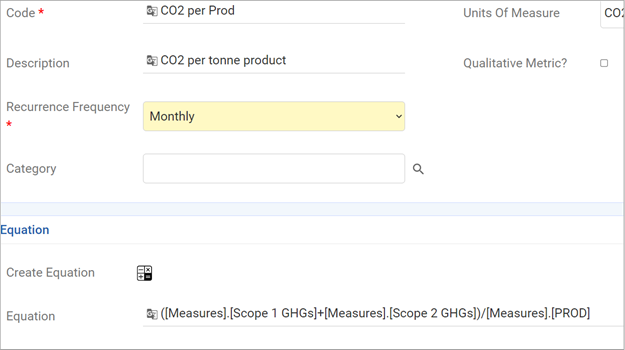
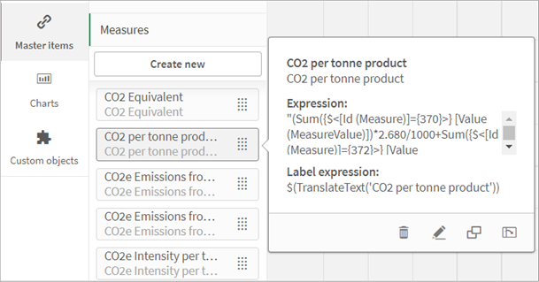
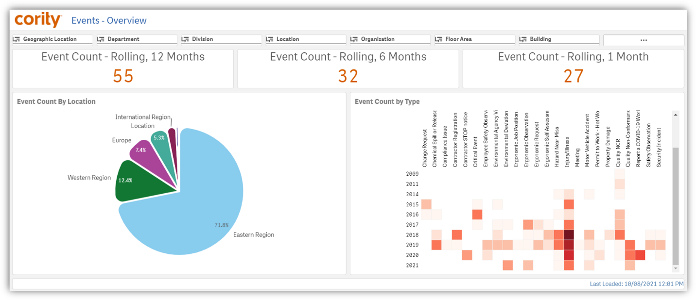
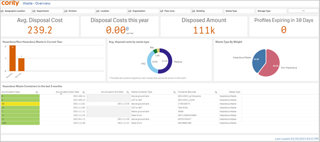
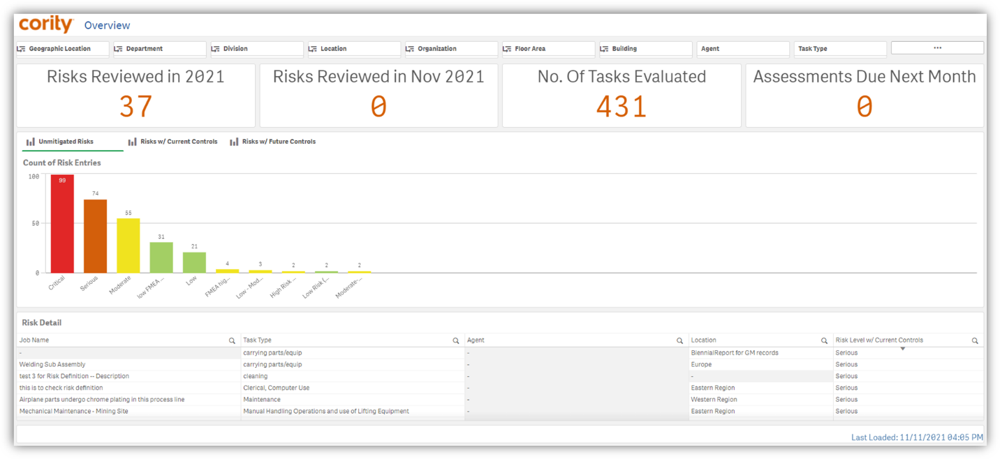
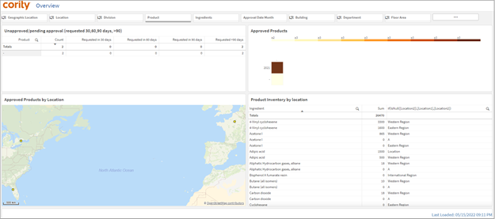
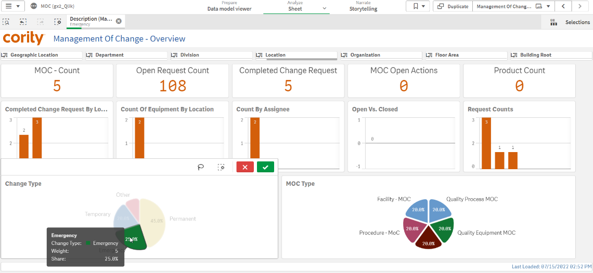
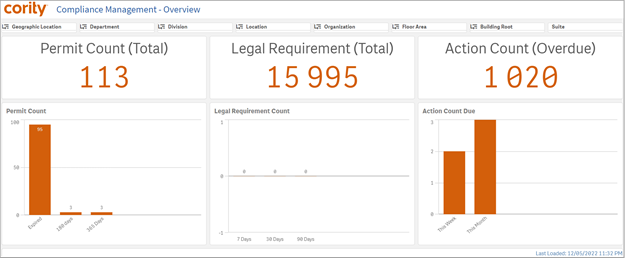
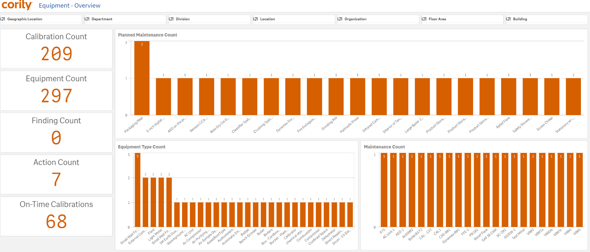
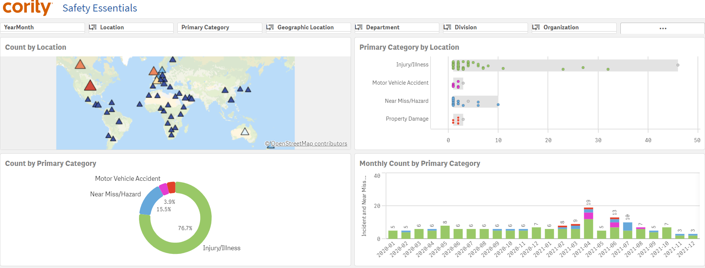

Reports on custom metrics, emission factors and campaigns.
Any custom calculation in GX2 is translated as a CorAnalytics master measure. A calculation built in GX2 is available after the nightly refresh, in CorAnalytics. Once the master item appears, the data is refreshed every 60 minutes. Please see example.
For emission factor values, the data is only refreshed once a day.
The data tables below are included in the data model with pre-defined joins. Admin/Creator users can view this in the data model viewer.
| DT_MeasureValue | LU_GLB_Measure |
| DT_MeasureAssignee | DT_User |
| DT_Employee | LU_GLB_Campaign |
| LU_GLB_GroupAndTeam | LU_GLB_GroupAndTeamEmployee |
| DT_Employee | LU_GLB_UnitOfMeasure |
| LU_GLB_UOMCategory | LU_MEA_MeasureCategory |
| LU_GLB_TreeMaster | LU_GLB_TreeMasterCode |
| DT_User | DT_Employee |
| DT_EmissionFactorValue | LU_GLB_EmissionFactor |
| LU_GLB_EmissionFactorByLocation | LU_GLB_UnitOfMeasure |
| LU_GLB_UOMCategory | LU_GLB_MeasureDueDate |
| DT_MeasureValue | LU_GLB_Measure |
| LU_GLB_Campaign | DT_CampaignMetric |
| DT_CampaignAssignee | DT_EmissionFactorValue |
Since the data can vary from customer to customer, this module doesn't have any out-of-the-box visuals.
Calculation 1: C02 per Prod recorded inside custom metrics

Master Measure in CorAnalytics App

Metrics with Emission Factors will limit reporting back to 10 years. This is to account for data growth over time.
Reports on open and closed actions to provide metrics on performance and project workload.
| LU_AU_AUT_Category | LU_AU_AUT_Source |
| LU_AU_AUT_Topic | LU_GLB_Classification |
| LU_GLB_FindingSuperType | LU_GLB_FindingType |
| LU_GLB_HazardSvrRating | LU_GLB_Probablity |
| LU_GLB_Reason | LU_GLB_RequirementType |
| LU_GLB_RiskDefinition | LU_GLB_Status |
| LU_INC_Cause | DT_Action |
| DT_AuditDetail | DT_AuditProfile |
| DT_AuditQuestionnaire | DT_BFE |
| DT_CaseMaster | DT_Employee |
| DT_Equuipment | DT_IHNoiseSample |
| DT_IHSample | DT_IncidentSelfReport |
| DT_LegalRequirment | DT_MVA |
| DT_ManagementOfChange | DT_Note |
| DT_Objective | DT_Permit |
| DT_QuestionnaireResponse | DT_RASEntry |
| DT_RASMaster | DT_RASJobList |
| DT_RespiratorFitTesting | DT_RootCause |
| DT_Waste | DT_ContractorProject |
| DT_Contractor | DT_QualityEvent |
| DT_AuditProfileDueDate | LU_GLB_AUT_TreeMasterCode |
| DT_QuestionnaireHeader |
Reports on audit metrics such as schedule and task completion.
| LU_AU_AUT_Reason | LU_AU_AUT_Status |
| LU_AUT_NoteType | LU_AU_AUT_Type |
| LU_GLB_AUT_Country | LU_GLB_JobPosition |
| LU_GLB_JobPositionGroup | LU_GLB_JobType |
| LU_GLB_RiskDefinition | LU_GLB_ShiftCode |
| All UDF LU tables (1-6) | DT_Employee |
| DT_AuditProduct | DT_RASJobList |
| DT_Employee | DT_Document |
| DT_AuditPermit | DT_AuditLegalReq |
| DT_Note | DT_RootCause |
| DT_Action | DT_Finding |
| LU_GLB_AUT_TreeMasterCode | DT_QuestionnaireHeader |
Reports on inspections metrics.
| LU_AUT_Reason | LU_AUT_Status |
| LU_AUT_Topic | LU_AUT_Type |
| LU_GLB_Country | LU_GLB_Letter |
| LU_QUE_Quetionnaire | DT_User |
| DT_User (Created By) | DT_Action |
| DT_AuditAssignee | DT_Document |
| DT_Finding | DT_LegalRequirement |
| DT_ManagementofChange | DT_ObjecteiveInspection |
| DT_Permit | DT_AuditProfileDueDate |
| LU_GLB_TreeMasterCode | DT_QuestionnaireHeader |
Reports on event data recorded in GX2. Events are recorded across solutions.
Event Count - Rolling 1, 6, and 12 months. Rolling calculations are updated monthly.
| DT_IncidentSelfReport | LU_GICategory |
| DT_Contractor | DT_Employee |
| JobType | Weather Conditions |
| DT_Permit | DT_Equipment |
| DT_QualityEvent | DT_IncidentHazard |
| LU_QE_Product | LU_GLB_FiscalPeriod |
| DT_Incident | LU_INC_SourceOfInjury |
| LU_GLB_AgentHazard | DT_RASEntry |

Reports on waste management data recorded in GX2. Waste data is recorded in the Environmental solution.

The Risk Data Model brings in risk tables from all clouds except IH/OH. For certain roles that come with specific risks (e.g. a welder) the risk module helps to assess and mitigate overall risks. Different categories show actions and findings on the dashboard that can be broken down into geography, team, and beyond.
| DT_RASJobList | LU_GLB_ExposureGroup |
| DT_JobListLegalReq | DT_RASMaster |
| DT_RASEntry | DT_RASMasterControlCode |
| DT_Equipment | GDDLOFB |
| LU_GLB_AgentHazard | DT_RASELegalReq |
| Task Type | Agent |
| Control Level 1, 2, | Probability 1, 2, 3 |
| Hazard Rating 1, 2, 3 | Risk Definition |
| Process | Suite flag (to determine the module the risk belongs to - all except IH/OH risks are included) |
| Day/month/year/qtr/FY (Time dimensions for reporting) | Geographic locations (GDDLOFB) |
| RiskAssessment Date | Reassessment Date |
| Inactive | In Progress |
| Invalid | Due Date |
The model contains visuals showing the key KPIs as well as additional visuals delving deep in to Serious and Critical Risks with Current Controls.

Reports on chemical products and ingredients.
| LU_GLB_AgentHazard | LU_IH_AgentIngredient |
| LU_IH_AgentStandard | DT_ChemInventory |
| DT_ChemInventoryAmount | DT_ManagementOfChange |
| LU_GLB_Manufacturer | DT_ManagementofChangeGDDLO |
| DT_ChemInventoryEquipment | DT_Equipment |
| DT_ApprovalStatus | LU_GLB_AgentHazardSDS |

This app can be used to report on key KPIs. The app has key counts across all modules inside Cority. It allows for easy creation of dashboard for reporting on key metrics.
Reports on change requests
| DT_ManagementOfChange | DT_Employee |
| LU_GLB_ManagementOfChangeType | LU_GLB_ChangeType |
| DT_Equipment | LU_GLB_Approver |
| LU_GLB_WorkflowStatus | DT_AuditDetail |
| DT_AuditProfile | DT_RASMaster |
| DT_RASJobList | DT_QualityEvent |
| LU_QE_Product | LU_GLB_AgentHazard |
| LU_GLB_Vendor | DT_LegalRequirement |
| DT_Incident | DT_Finding |
| DT_Action | GDDLOFB |
| DT_QuestionnaireHeader | LU_QUE_Question |
| LU_QUE_Questionnaire | DT_QuestionnaireResponse |
| Name | Description/Field | Table |
| Management of Change | Description | DT_ManagementOfChange |
| MoC Type | Description | LU_GLB_ManagementOfChangeType |
| Change Type | Description | LU_GLB_ChangeType |
| Equipment | Description | DT_Equipment |
| Workflow Status | Code | LU_GLB_WorkflowStatus |
| Product | Code | LU_QE_Product |
| Date Due | DateExpected | DT_ManagementOfChange |
| Open Date | Created Date | DT_ManagementOfChange |
| Initiated Date | StartDate | DT_ManagementOfChange |
| Assignee | Assigned To | DT_User |
| Suite flag | Calculated Flag based off Suite names | DT_ManagementOfChange |
| Chemical | Description | LU_GLB_AgentHazard |
| Vendor | Code | LU_GLB_Vendor |
| User | FullNameWithCredentials | DT_User |
| Employee | LastName + FirstName | DT_Employee |
| Final Approval Date | Final Approval Date | DT_ManagementOfChange |
| GDDLOFB | ||
| day | Created Date | DT_ManagementOfChange |
| month | ||
| year | ||
| quarter | ||
| FY (Fiscal Year) |
| MoC - Count | Master Measure | DT_ManagementOfChange.id |
| DT_MOC Count By Assignee | ||
| Count by equipment, display of location | DT_Equipment.ID | |
| Count by product | Master Measure | LU_QE_Product - Product ID |
| Open vs. Closed | Number of requests open vs. closed (Workflow Status = open/closed). Count(ID). | |
| Use Open Date minus Date Due | ||
| MoC, count of open actions | Date Due, Completed date from Findings and Actions Tab. | |
| Count by, year, quarter, month | Master Measure | |
| Days to approve | Master Measure | Final Approval Date minus Created Date (Avg days to Approve) |
| Count of open requests - drill down to list | Count of Ids where final approval date is null | |
| Completed change requests by location | Count of Ids where final approval date is not null and <today | |
| Pie chart by "Change Type" | Count id ids by Change Type | |
| Pie Chart by MoC Type | Count id ids by MoC Type - try to drill from MoC type to Change Type. |

| Master Measure Name | Definition |
| Permit Count (Expiring in 180 days) | Count if Permit IDs where End Date > Today + 180 |
| Permit Count (Expiring in 365 days) | Count if Permit IDs where End Date > Today + 365 |
| Permit Count (Expired) | Count if Permit IDs where End Date < Today |
| Legal Requirement Count (Total) | Count of Leg Req IDs |
| Legal Requirement Count (Updated last 7 Days) | Count of Leg Req IDs where Start Date < today -7 |
| Legal Requirement Count (Updated last 30 Days) | Count of Leg Req IDs where Start Date < today -30 |
| Legal Requirement Count (Updated last 90 Days) | Count of Leg Req IDs where Start Date < today -90 |
| Action Count (Overdue) | Count of Action ID that meets below criteria Overdue definition: Completed Date > Due Date AND Completed Date = null but Due Date is < today |
| Action Count (Due this week) | Count of Action ID, Due Date is this week |
| Action Count (Due this month) | Count of Action ID, Due Date is this month |

Reports on equipment data in the Environment, Safety, IH/OH, Quality, and Ergonomics clouds.
| DT_ChemInventoryEquipment | DT_ChemInventoryEquipment_A |
| DT_Equipment | DT_Equipment_A |
| DT_EquipmentAttribute | DT_EquipmentAttribute_A |
| DT_EquipmentEmissionParameter | DT_EquipmentEmissionParameter_A |
| DT_EquipmentIncident | DT_EquipmentIncident_A |
| DT_EquipmentISR | DT_EquipmentISR_A |
| DT_EquipmentMva | DT_EquipmentMva_A |
| DT_EquipmentPermit | DT_EquipmentUDF |
| DT_EquipmentUDF_A | DT_IHEquipCalibrationHx |
| DT_IHEquipCalibrationHx_A | DT_IHEquipMaintenanceHx |
| DT_IHEquipMaintenanceHx_A | DT_IHNoiseSampleEquip |
| DT_IHNoiseSampleEquip_A | DT_IHSampleEquipment |
| DT_IHSampleEquipment_A | LU_GLB_EquipmentGroup |
| LU_GLB_EquipmentGroupEquipment | LU_GLB_EquipmentType |
| LU_IH_EquipmentStatus | DT_Action |
| DT_Finding |

Safety incidents are one of the most reported-on areas of the application. This app uses incidents at its center, and users can report on incidents and more.
Entities
The following entities are included in the CorAnalytics application.
Note If an entity is not showing up in the application, then the data has not been entered in the application.
The following list of KPIs will be included in the Safety Essentials App and appear as Master Measures. The system automatically picks the latest date to calculate KPIs when you open the app.
An admin can modify the calculations to match user needs. To learn how to create additional calculations, go to Qlik Continuous Classroom.
Note
Reference Date: indicates the time dimensions used to slice and dice as well as aggregate the measures.
Time Context: All measures have different context to the Time Dimensions. For example, the Time Dimension's context is the record's Lost Restricted Date when used with the Absence Days measure, and Incident Date when used with Incident Count measure.
| KPI | Definition | Formula | Reference Date | Time Context | ||||
| # Days Since Last Lost Time Incident | today's date minus the date of injury of the most recent LWD absence | Interval(Today() - Max({<[Code (Injuries/Illnesses.Absence.AbsenceStatus)]={'LWD'}>} [Date Injured (Injuries/Illnesses)]), 'd') | n/a | |||||
| # Days Since Last OSHA Recordable Incident | today's date minus date of injury of most recent occupational checked/OSHA recordable checked record | Interval(Today() - Max({<[OSHARecordable (Injuries/Illnesses)]={1}>} [Date Injured (Injuries/Illnesses)]), 'd') | n/a | |||||
| Active Employee Count | Number of Active Employees | Count({<[DateOfHireDate (Employee)]= {"<=$(=AsOfDate)"}> - <[DateOfTerminationDate (Employee)]={"<=$(=AsOfDate)"}>} [Id (Employee)]) | AsOfDate | DateofHire + DateOfTermination | ||||
| Absence Days | Total of Lost and Restricted days by month | Sum([LWD (AbsenceCountByMonth)] + [RWD (AbsenceCountByMonth)]) | YearMonth | LostRestrictedDate | ||||
| EU-12M-Rolling Average Incident Rate | European Union Standard 12-month Rolling Average Incident Rate | Count({<[Occupational (Injuries/Illnesses)]={1}, YearMonth = {">=$(=Date(AddMonths(Max(YearMonth), -11), 'YYYY-MM')) <=$(=Date(Max(YearMonth), 'YYYY-MM')))"}>} Distinct([Id (Injuries/Illnesses)])) * 1000000 / Sum({<YearMonth = {">=$(=Date(AddMonths(Max(YearMonth), -11), 'YYYY-MM')) <=$(=Date(Max(YearMonth), 'YYYY-MM'))"}>} Distinct{<[Id (EmployeeHoursOfWork)]>} [Hours Of Work]) | AsOfDate | |||||
| DART YTD | # of occupational checked case records for all absence types x 200000 / employee hours worked YTD | Count({<[%Absence Status Type]={'1','0'}, [%Occupational (Injuries/Illnesses)]={'1'}, [InjuredDateType]={'1'}, [%CurrentYTD_Flag]={'1'}>} Distinct [%Id (Injuries/Illnesses)]) * 200000 / Sum ({<[HoursOfWorkDateType]={'1'}, [Description (Incident.Classification)]=, [Description (Incident.PrimaryCategory)]=, [%CurrentYTD_Flag]={'1'}>} [Hours Of Work]) | ||||||
| Hours of Work YTD | Sum or Hours of Work YTD | Sum({<[%CurrentYTD_Flag]={'1'}>} [Hours Of Work]) | AsOfDate | |||||
| Incident Count | # of incidents records | Count(Distinct([Id (Incident)])) | selected date range | IncidentDate | ||||
| Incident Frequency Rate | # of incidents records x 200000 / employee hours worked (in selected time frame) | Count(Distinct([Id (Incident)])) * 200000 / Sum(Distinct{<[Id (EmployeeHoursOfWork)]>} [Hours Of Work]) | selected date range | IncidentDate | ||||
| Incident Frequency Rate YTD | cumulative # of incidents records x 200000 / cumulative employee hours worked (in a selected time frame) | Count({<[%CurrentYTD_Flag]={'1'}>} Distinct([Id (Incident)])) * 200000 / Sum(Distinct{<[Id (EmployeeHoursOfWork)], [%CurrentYTD_Flag]={'1'}>} [Hours Of Work]) | AsofDate | IncidentDate | ||||
| Injury and Illness Count | # of occupational checked case records | Count({<[%Occupational (Injuries/Illnesses)]={'1'}>} Distinct([%%Id (Injuries/Illnesses)])) | selected date range | DateInjured | ||||
| Injury and Illness Frequency Rate | # of occupational checked case records x 200000 / employee hours worked | Count({<[%Occupational (Injuries/Illnesses)]={'1'}>} Distinct([%%Id (Injuries/Illnesses)])) * 200000 / Sum(Distinct{<[Id (EmployeeHoursOfWork)]>} [Hours Of Work]) | selected date range | DateInjured | ||||
| Injury and Illness Frequency Rate YTD | cumulative # occupational checked case records x 200000 / cumulative employee hours worked | Count({<[%Occupational (Injuries/Illnesses)]={'1'}, [%CurrentYTD_Flag]={'1'}>} Distinct([%%Id (Injuries/Illnesses)])) * 200000 / Sum(Distinct{<[Id (EmployeeHoursOfWork)], [%CurrentYTD_Flag]={'1'}>} [Hours Of Work]) | AsofDate | DateInjured | ||||
| Lost and Restricted Case Count | # of occupational checked case records with either an LWD or RWD absence | Count({<[%Occupational (Injuries/Illnesses)]={1}, [%Absence Status Type]={0,1}>} Distinct([%%Id (Injuries/Illnesses)])) | ||||||
| Lost and Restricted Case Frequency Rate | # of occupational checked case records with either an LWD or RWD absence x 200000 / employee hours worked | Count({<[%Occupational (Injuries/Illnesses)]={1}, [%Absence Status Type]={0,1}>} Distinct([%%Id (Injuries/Illnesses)])) * 200000 / Sum([Hours Of Work]) | selected date range | DateInjured | ||||
| Lost and Restricted Day Rate | # of LWD and RWD absence days for occupational checked cases x 200000 / employee hours worked | (Sum([LWD (IncidentOSHACountByMonth)]) + Sum([RWD (IncidentOSHACountByMonth)])) * 200000 / Sum([Hours Of Work]) | selected date range | DateInjured | ||||
| Lost and Restricted Day Rate YTD | cumulative # of LWD and RWD absence days for occupational checked cases x 200000 / cumulative employee hours worked | (Sum({<[%CurrentYTD_Flag]={'1'}>} [LWD (IncidentOSHACountByMonth)]) + Sum({<[%CurrentYTD_Flag]={'1'}>} [RWD (IncidentOSHACountByMonth)])) * 200000 / Sum({<[%CurrentYTD_Flag]={'1'}>} [Hours Of Work]) | AsofDate | DateInjured | ||||
| Lost Time Case Count | # of occupational checked case records with an LWD absence | Count({<[%Occupational (Injuries/Illnesses)]={1}, [%Absence Status Type]={1}>} Distinct([%%Id (Injuries/Illnesses)])) | selected date range | DateInjured | ||||
| Lost Time Case Frequency Rate | # of occupational checked case records with an LWD absence | Count({<[%Occupational (Injuries/Illnesses)]={1}, [%Absence Status Type]={1}>} Distinct([%%Id (Injuries/Illnesses)])) * 200000 / Sum([Hours Of Work]) | selected date range | DateInjured | ||||
| Lost Time Case Frequency Rate YTD | cumulative # of occupational checked case records with a LWD absence x 200000 / cumulative employee hours worked | Count({<[%Occupational (Injuries/Illnesses)]={1}, [%Absence Status Type]={1}, [%CurrentYTD_Flag]={'1'}>} Distinct([%%Id (Injuries/Illnesses)])) * 200000 / Sum({<[%CurrentYTD_Flag]={'1'}>} [Hours Of Work]) | AsofDate | DateInjured | ||||
| Lost Time Day Rate | # of LWD absence days for occupational checked cases x 200000 / employee hours worked | Sum([LWD (IncidentOSHACountByMonth)]) * 200000 / Sum([Hours Of Work]) | selected date range | DateInjured | ||||
| Lost Time Day Rate YTD | cumulative # of LWD absence days for occupational checked cases x 200000 / cumulative employee hours worked | Sum({<[%CurrentYTD_Flag]={'1'}>} [LWD (IncidentOSHACountByMonth)]) * 200000 / Sum({<[%CurrentYTD_Flag]={'1'}>} [Hours Of Work]) | AsofDate | DateInjured | ||||
| Lost Work Days | # of LWD absence days for occupational checked cases | Sum([LWD (IncidentOSHACountByMonth)]) | selected date range | DateInjured | ||||
| OSHA Recordable Count | # of occupational checked/OSHA recordable checked case record | Count({<[%OSHARecordable (Injuries/Illnesses)]={1}, [%Line Out (Injuries/Illnesses)]={0}>} Distinct [%%Id (Injuries/Illnesses)]) | selected date range | DateInjured | ||||
| OSHA Recordable Rate | # of occupational checked/OSHA recordable checked case records x 200000 / employee hours worked | Count({<[%OSHARecordable (Injuries/Illnesses)]={1}, [%Line Out (Injuries/Illnesses)]={0}>} Distinct([%%Id (Injuries/Illnesses)])) * 200000 / Sum([Hours Of Work]) | selected date range | DateInjured | ||||
| OSHA Recordable Rate YTD | cumulative # of occupational checked/OSHA recordable checked case records x 200000 / cumulative employee hours worked | Count({<[%OSHARecordable (Injuries/Illnesses)]={1},[%Line Out (Injuries/Illnesses)]={0}, [%CurrentYTD_Flag]={'1'}>} Distinct([%%Id (Injuries/Illnesses)])) * 200000 / Sum([Hours Of Work])
| AsofDate | DateInjured | ||||
| Restricted Case Count | # of occupational checked case records with an RWD absence | Count({<[IsRestrictedCase]={1}>} Distinct([%%Id (Injuries/Illnesses)])) | selected date range | DateInjured | ||||
| Restricted Case Frequency Rate | # of occupational checked case records with an RWD absence x 200000 / employee hours worked | Count({<[IsRestrictedCase]={1}>} Distinct([%%Id (Injuries/Illnesses)])) * 200000 / Sum([Hours Of Work]) | selected date range | DateInjured | ||||
| Restricted Case Frequency Rate YTD | cumulative # of occupational checked case records with a RWD absence x 200000 / cumulative employee hours worked | Count({<[%Occupational (Injuries/Illnesses)]={1}, [%Absence Status Type]={0}, [%CurrentYTD_Flag]={'1'}>} Distinct([%%Id (Injuries/Illnesses)])) * 200000 / Sum({<[%CurrentYTD_Flag]={'1'}>} [Hours Of Work]) | AsofDate | DateInjured | ||||
| Restricted Day Rate | # of RWD absence days for occupational checked cases x 200000 / employee hours worked | Sum([RWD (IncidentOSHACountByMonth)]) * 200000 / Sum([Hours Of Work]) | selected date range | DateInjured | ||||
| Restricted Day Rate YTD | cumulative # of RWD absence days for occupational checked cases x 200000 / cumulative employee hours worked | Sum({<[%CurrentYTD_Flag]={'1'}>} [RWD (IncidentOSHACountByMonth)]) * 200000 / Sum({<[%CurrentYTD_Flag]={'1'}>} [Hours Of Work]) | AsofDate | DateInjured | ||||
| Restricted Work Days | # of RWD absence days for occupational checked cases | Sum([RWD (IncidentOSHACountByMonth)]) | selected date range | DateInjured | ||||
Time Dimensions:
To report on time dimensions, a table called As-ofCalendar has been created in the application. The fields included can be used for aggregation or creating custom calculations on fields. Refer to the out-of-the-box master measures for examples.
| Measure Time Flag Abbreviation | Meaning | CorAnalytics Field Flag in Calculation |
| YTD | Year to Date | [%CurrentYTD_Flag]={'1'} |
| LY | Last Year | [%LastYear_Flag]={'1'} |
| LYTD | Last Year to Date | [%LastYTD_Flag]={'1'} |
| R12M | Rolling 12 Month | [%Rolling12Months_Flag]={'1'} |
| RP12M | Prior Rolling 12 Month | [%RollingPrevious12Months_Flag]={'1'} |
Asof-Date/Month/Week is used for cumulative aggregation of measures Asof-Date/Week/Month. This type of cumulative aggregation data is limited to the last five years from the date selected in the filter. It is recommended to use the cumulative aggregation only when YTD, Last YTD calculations are needed.
Some measures may be calculated based on multiple measures based on different tables with different fields mapped with Time dimensions.
Other Notable Dimensions:
The Safety Essentials app has essential elements from the Safety Data app. It can be used on reporting on Safety data and has additional KPIs and visuals.
